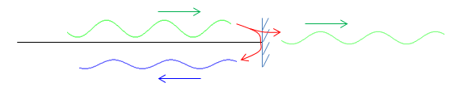

|
RF - Reflection Coefficient Home : www.sharetechnote.com |
|
If a electric wave (or electro-magnetic wave) hits a discontinuous phase, there can be largely two possible paths. In one path, the signal goes through the discontinuity and in the other path it bounce back from the plane as illustrated below.

How much portions of the signal goes through the phase and how much portions get bounced back is dependent on various factors. Out of these two path, 'Reflection Coefficient' is an indicator showing how much portions of the impinging signal get bounced back and it is defined as shown below.
In electric circuit, the reflection coefficient can be expressed as below.
Reflection Coefficient is an indicator which is a basis of other indicator such as VSWR, Return Loss.
|